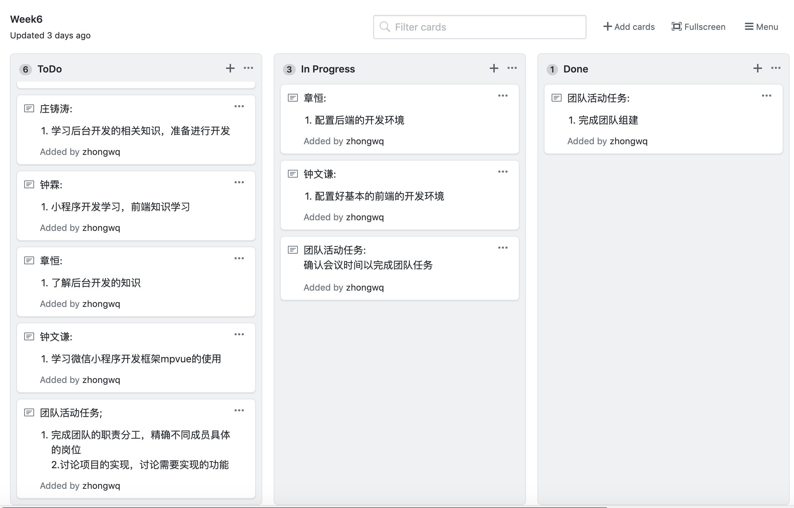
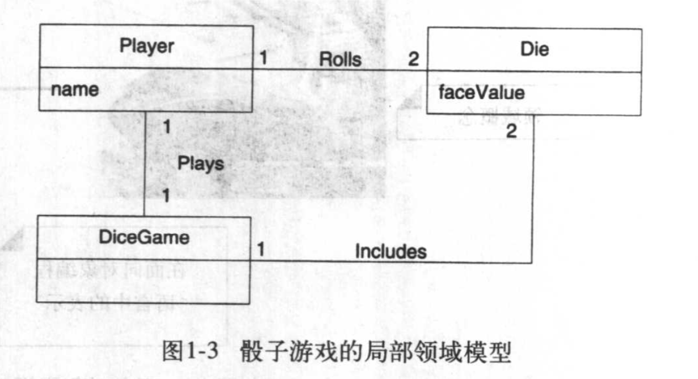
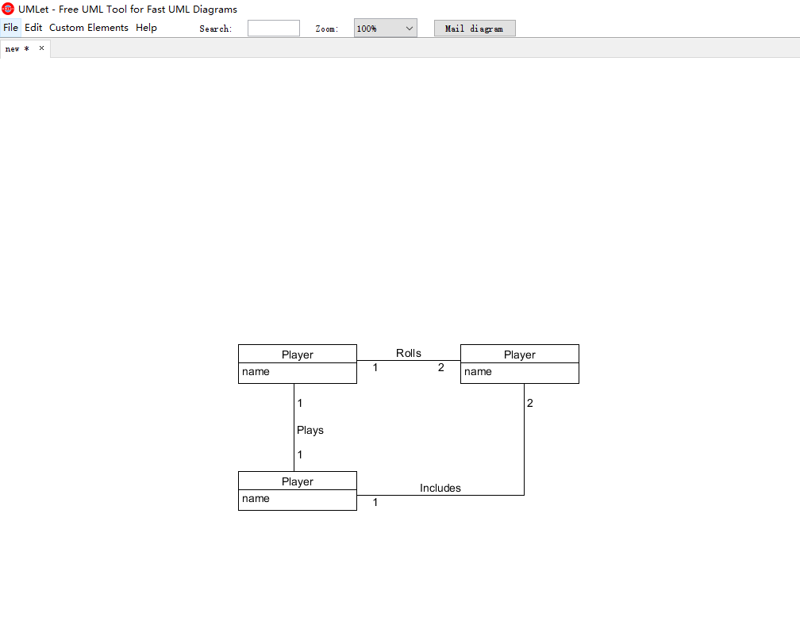

系统分析作业2
简答题
用简短的语言给出对分析、设计的理解
- 分析: 分析指的是对于实际问题及需求的研究和调查，是确认有效的功能及其需求的一个过程而不是发现更多功能和需求
- 设计: 设计指的是在软件方面和硬件方面满足要求的解决方案，指的是软件框架、软件对象的描述以及数据库方案等的内容
用一句话描述面向对象的分析与设计的优势。
面向对象的分析与设计将一些功能和需求进行了封装，降低了软件各个模块的耦合性，方便了各个模块的复用以及软件的迭代，且方便他人对于软件整个体系设计的理解。
简述 UML（统一建模语言）的作用。考试考哪些图？
UML是一种标准的图标语言，是一种可以用于说明、可视化、构建和编写一个正在开发的、面向对象的、软件密集系统的制品的开放方法。
- 图形化的表示机制，十多种视图，分4类: 考试考的图有以下几个
- 用例图: 用户角度：功能、执行者
- 静态图: 系统静态结构
- 类图: 概念及关系
- 对象图: 某种状态或时间段内，系统中活跃的对象及其关系
- 包图: 描述系统的分解结构
- 行为图
- 交互图: 描述对象间的消息传递
- 顺序图：强调对象间消息发送的时序
- 合作图：强调对象间的动态协作关系
- 状态图: 对象的动态行为。状态-事件-状态迁移-响应动作
- 活动图: 描述系统为完成某功能而执行的操作序列
- 交互图: 描述对象间的消息传递
- 实现图: 描述系统的组成和分布状况
- 构件图：组成部件及其关系
- 部署图：物理体系结构及与软件单元的对应关系
从软件本质的角度，解释软件范围（需求）控制的可行性
实现软件范围控制，我们需要进行软件需求分析，把软件计划期间建立的软件可行性分析求精和细化，分析各种可能的解法，并且分配给各个软件元素。由于软件的本质是复杂性、不可见性、不一致性、可变性，所以软件范围多数情况下对于客户和开发者都是模糊的，我们需要进行需求分析从而实现对软件需求的控制，确定系统必须完成哪些工作，对目标系统提出完整、准确、清晰、具体的要求。
项目管理实践
看板使用练习（提交看板执行结果贴图，建议使用 Git project)

UML绘图工具练习
原图(UML和模式应用（原书第3版) p6图1-3) 
实现
